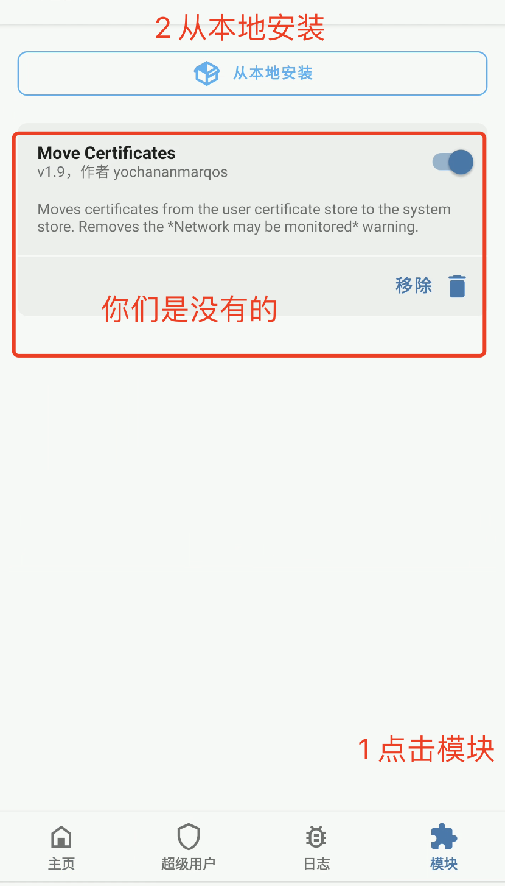
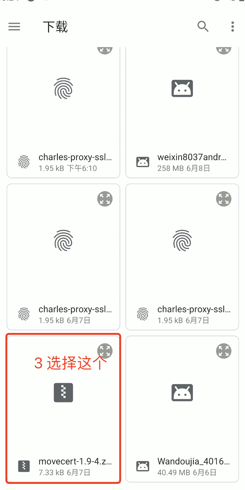
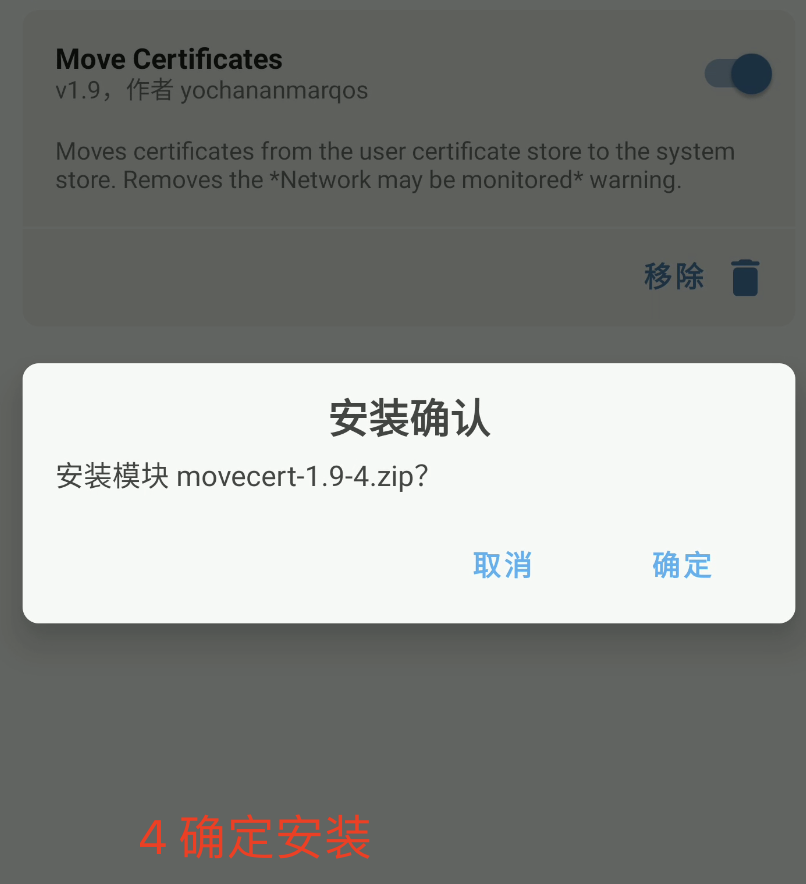
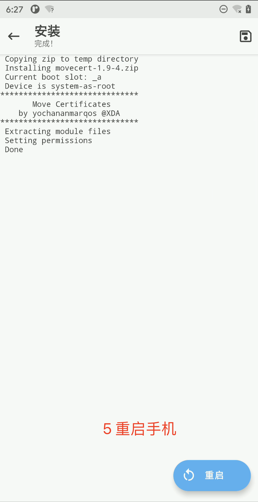

三、抓包和反编译
1、数据包抓取
1.1 抓包工具选择
#1 什么是抓包工具？
-之前在学习js逆向时---》抓取数据包---》浏览器调试模式--》发送请求包，就可以看到---》只能抓取web的数据包
-app爬虫---》需要一款专门的抓包工具---》有很多--》装在电脑上（抓手机包）--》推荐使用charles
# 2 有哪些专业的抓包工具？
# Wireshark：Wireshark 是一个开源的网络抓包工具，可以在多个平台上运行，支持多种协议的抓取和分析。
# Fiddler：Fiddler 是一个跨平台的抓包工具，可以用于捕获和分析 HTTP 和 HTTPS 流量。它提供了强大的调试和排查功能
# Charles Proxy：Charles Proxy 是一款跨平台的代理服务器工具，可以捕获并分析 HTTP 和 HTTPS 流量。它具有图形化界面和丰富的功能，适用于移动设备和桌面应用程序的抓包。--》咱们选择它
# Tcpdump：Tcpdump 是一个命令行抓包工具，适用于 Linux 和 Unix 系统。它可以捕获和分析网络流量，并提供灵活的过滤和输出选项
# 抓包工具工作原理？


1.2 charles的安装和配置
# 直接从资料包中获取：
4.5.6 版本：mac和win
建议大家用这个版本
1.2.1 win安装和配置
# 1 拿到资料包中的软件：charles-proxy-4.5.6-win64.msi
# 2 双击，一路下一步--》安装位置[尽量不要装在c盘]
# 3 装完，桌面上出现 charles的图标 【青花瓷】
1.2.2 mac安装和配置
# 1 拿到资料包中的软件：Charles_4.5.6.dmg
# 2 双击，一路下一步--》无法选择安装位置
# 3 装完，应用程序中出现 charles的图标 【青花瓷】
1.2.3 sn账号
Name: Just For Testing
Serial: 230ADA2020DFBD108E
Name: TEAM MESMERiZE
Serial: FC91D362FB19D6E6CF
Name: MSJ
Serial: 1101CAF6A1989C62AC
1.2.4 版本问题
# 如果同学之前装了不同版本的
-建议换成一样的--》按钮位置可能不一样--》英文
-学习能力比较强，不想卸载--》如果遇到问题，自行搜索解决
1.3 抓取手机的http包
###### 重要 ####
# 前提---必须保证，手机和电脑处于同一个路由器 ######
电脑使用有线连接
手机使用无线连接
# 尽量让电脑和手机处于同一个网段
-手机ip 192.168.1.11
-电脑ip 192.168.1.20
# 电脑防火墙关掉
# 配置步骤
【电脑端】打开charles
【手机端】配置手机代理
1.3.1 配置手机代理
# 1 打开charles---》点击：proxy--》proxy Settings---》如下图
# 2 打开charles--》help--->local ip address--->如下图--》电脑本机的ip
-有的同学可能有多个
1 电脑有多个网卡 （跟手机在同一个网段）
2 装了虚拟机，有虚拟网卡（肯定不用）
-其他方式查看ip地址
win：命令窗口中：ipconfig
mac：命令窗口中：ifconfig
# 3 打开手机--设置--wlan---》链接跟电脑同样的无线网后---》点齿轮--》点击右上角小笔---》


1.3.2 配置模拟器代理
# 1 打开charles---》点击：proxy--》proxy Settings---》如下图
# 2 打开charles--》help--->local ip address--->如下图--》电脑本机的ip
-有的同学可能有多个
1 电脑有多个网卡 （跟手机在同一个网段）
2 装了虚拟机，有虚拟网卡（肯定不用）
-其他方式查看ip地址
win：命令窗口中：ipconfig
mac：命令窗口中：ifconfig
# 3 打开模拟器--》设置--》wlan---》选中已经连接的网络长按--》如下图

1.3.3 手机-抓取http包
##### https抓不到#####
# app端--》http包不多见
#1 爱学生app---》资料包中--》安装到手机上
#2 打开app，打开charles
#3 点击登录，就能抓到包了
#4 charles的常规操作，如下图
# 5 改包--》重新发送--》经常用
改了--》点击excute 会重新发送
改包重新发送的目的是？
后期我们抓包后，要破解一些字段--》有些字段我们可以直接删除，发送看看能不能用，如果能用，说明这些字段不重要，我们就不需要破解了
# 6 不用charlse抓取电脑的包
-电脑和手机都装--》乱起八遭很多，不好过滤--》直接屏蔽掉电脑上的包
proxy---》window proxy 对钩去掉即可


1.3.4 模拟器抓http包
跟真机一样
1.3.5 模拟登录
import requests
headers = {
'AppVersion': '4.0.7.2',
'Content-Type': 'application/json; charset=utf-8',
'Content-Length': '66',
'Host': 'parentsystem.aixuesheng.net',
'User-Agent': 'okhttp/3.14.4',
}
data = {
"code": "",
"password": "",
"username": "18953675221",
"uuid": ""
}
res = requests.post('http://parentsystem.aixuesheng.net/app/v1/patriarchLogin/1',json=data)
print(res.text)
1.4 抓取手机https包
# 目前，我们可以顺利抓取http的数据包，但是抓不了https的数据包
-https=http+ssl
-需要在客户端安装证书
-如果要抓https包---》需要在手机端--》安装charlse的证书
# 注意1 ：
1 安卓 7 以下的设备[真机不多见了]，安装完证书，就可以使用，可以抓https的包了
2 安卓7 以上设备，安装完证书---》只是用户证书----》需要把证书做成系统证书--》借助于 magisk+模块move cert---》手机必须root
3 总结：现在市面上见到的手机---》基本都是8及以上的版本---》必须root 才能抓 https的包
# 注意点2：
如果后期配置了代理---》能顺利抓http的包---》但是不能抓https的包
1 证书没装，没装好，没移动。。
2 proxy---》ssl proxying setting---》如下图

1.4.1 模拟器配置抓取https的包（6.0.1）
### 模拟器--》不需要移动证书--》不需要root
# 步骤如下：
1 打开charles--》help---》SSLProxying---》InstallCharles Root Certificate on a Mobile...
2 访问网址 chls.pro/ssl
3 手机设置完代理，才能访问
4 下载安装证书，输入名字
5 就可以抓取https的包了---》跟之前抓http一样


1.4.2 真机配置抓https包(11)
# 1 真机配置好代理后
# 2 浏览器访问：chls.pro/ssl
# 3 下载后，手机打开：安全---》加密与凭据---》安装证书---》CA证书--》仍然安装---》选中下载的--》安装完成
# 4 手机打开：设置--》安全--》加密与凭据---》信任的凭据--》在用户证书下，目前不能用
-此时可以看到用户证书和系统证书
# 5 把用户证书转移到系统证书下


1.4.2.1 系统证书和用户证书解释
在 Android 系统中，有两种类型的证书：用户证书（User Certificates）和系统证书（System Certificates）。
用户证书（User Certificates）：用户证书是由特定用户生成或颁发的数字证书。这些证书通常用于用户身份验证和安全通信。用户证书可以用于加密和解密数据，数字签名以及建立安全连接。用户证书通常由用户自己创建，例如，用于加密电子邮件、VPN连接或身份验证。
系统证书（System Certificates）：系统证书是由 Android 系统或设备制造商预装的证书。这些证书通常用于系统级别的安全功能，如应用程序签名验证、SSL/TLS 连接等。系统证书通常用于验证应用程序的真实性和完整性，以确保它们没有被篡改或恶意修改。这些证书由 Android 操作系统或设备制造商管理和维护。
系统证书包括以下几种类型：
代码签名证书：用于验证应用程序的签名，以确保应用程序的真实性和完整性。
安全通信证书：用于建立 SSL/TLS 连接，保护设备和服务器之间的通信安全。
根证书：根证书用于验证其他证书的真实性。Android 系统预装了一组根证书，用于验证 SSL/TLS 通信中的服务器证书。
用户证书和系统证书在安全和身份验证方面扮演不同的角色。用户证书由用户自己管理，用于个人身份验证和加密通信。而系统证书由操作系统或设备制造商管理，用于验证应用程序和保护系统级别的通信安全。
1.4.2.2 把用户证书做成系统证书
# 1 将move cert压缩包传到手机【movecert-1.9-4.zip】（任意好找的一个目录 `/sdcard/Download/`）
adb push /Users/lqz/soft/movecert-1.9-4.zip /sdcard/movecert-1.9-4.zip
# 2 使用面具，刷入
按照下图步骤
# 3 重启手机
# 4 手机打开：安全--》加密与凭据---》信任的凭据
-此时可以看到用户级别证书移动到系统级别了
# 5 此时可以愉快抓https包了




1.4.3 真机抓取https包
#1 抓取今日南川，首先安装
adb install app名字
# 2 打开charles，打开手机app（配置好代理了）
# 3 抓包如下
-如果抓不到，就两个原因

import requests
headers = {
'appid': '32',
'sessionid': '',
'token': '',
't': '1709907713598',
'sign': '763e6ea8e8ee4cca80b325f1399c14dd',
'cqlivingappclienttype': '1',
'cqlivingappclientversion': '2029',
'content-type': 'application/x-www-form-urlencoded',
'content-length': '213',
'accept-encoding': 'gzip',
'user-agent': 'okhttp/4.10.0'
}
data = {
'appId': '32',
'hashSign': '4f3b0bbf36224526b64092e4607f0053',
'imgUrl': '',
'lat': '29.568295',
'lng': '106.559123',
'loginName': '18953675221',
'nickName': '',
'openId': '',
'place': '重庆',
'pwd': '7fa8282ad93047a4d6fe6111c93b308a',
'sessionId': '',
'token': '',
'type': '',
}
res = requests.post('https://api.cqliving.com/login.html', data=data, headers=headers)
print(res.text)
2 反编译工具
2.1 常见的反编译工具
# 1 只是抓包--》不知道app如何加密的
# 2 必须反编译回来--》读逻辑--》读懂加密方案
# 3 需要反编译工具：
jadx（推荐）、jeb、GDA
# 4 jadx需要依赖java环境
2.2 JDK环境安装
# 1 jdk8-->最新的是24
# 2 把老师给的软件：
jdk-8u371-windows-x64.exe
2.2.1 win平台安装
# 1 下载jdk-8u371-windows-x64.exe
# 2 双击安装（选择位置）：D:\Program Files\Java
# 3 不用配置环境变量--》后续会聊--》装完自动加环境变量了
-java home：目前不用，后面会聊
2.2.2 mac平台安装
# 1 下载jdk-8u371-macosx-x64.dmg
# 2 双击安装（默认）
2.2.3 验证是否装成功
java -version # 看到打印安装成功
'''
java version "1.8.0_371"
Java(TM) SE Runtime Environment (build 1.8.0_371-b11)
'''
2.3 安装 JADX反编译工具
# 1 官网
https://github.com/skylot/jadx/releases
# 2 最新版本
1.4.7 ：以后大部分都会用它，后面有款app需要用一下老版本，反编译的更全
老师给大家几个版本：jadx-1.2.0.zip 这个咱们也用
# 3 装：jadx-1.2.0.zip
-解压zip
-移动到：d:soft/jadx-1.2.0
-bin 下有：
jadx-gui.bat # win下的运行
jadx-gui # mac下的运行
-把jadx-gui.bat发送到桌面快捷方式--》双击启动，把apk拖入即可
# 4 可以任意多版本共存
# 5 最新版本：
-下载：jadx-gui-1.4.7-with-jre-win.zip
-解压：jadx-gui-1.4.7.exe 双击运行它即可

3 抓包反编译某app
3.1 抓包
#1 车智赢--》资料包中
# adb install xx.apk
# 2 抓包分析
-请求地址：
https://dealercloudapi.che168.com/tradercloud/sealed/login/login.ashx
-请求方式：
post
-请求头：无特殊
-请求体：
pwd:7fa8282ad93047a4d6fe6111c93b308a
username：18953675221
# 3 密码加密了，加密逻辑不知道--》反编译，搜索--》破解加密方案

3.2 反编译定位代码
#1 反编译：根据关键字搜索
- pwd
- pwd"
- "pwd"
- put("pwd
- login/login.ashx
# 2 根据地址搜索：登录地址只有一个
# 3 搜到：public static final String LOGIN_URL = "/tradercloud/sealed/login/login.ashx";
# 4 在变量上点右键--》查找用例(谁用了它）
# 5 param("pwd", SecurityUtil.encodeMD5(str3))
# 6 encodeMD5 右键---》跳到声明
public static final String encodeMD5(String str) {
char[] cArr = {'0', '1', '2', '3', '4', '5', '6', '7', '8', '9', 'A', 'B', 'C', 'D', 'E', 'F'};
try {
byte[] bytes = str.getBytes();
MessageDigest messageDigest = MessageDigest.getInstance("MD5");
messageDigest.update(bytes);
byte[] digest = messageDigest.digest();
char[] cArr2 = new char[digest.length * 2];
int i = 0;
for (byte b : digest) {
int i2 = i + 1;
cArr2[i] = cArr[(b >>> 4) & 15];
i = i2 + 1;
cArr2[i2] = cArr[b & bx.m];
}
return new String(cArr2).toLowerCase();
} catch (Exception e) {
e.printStackTrace();
return null;
}
}
# 7 因为咱们不懂java--》大部分同学读不懂--》但是这就是java的md5加密
# 8 我们可以验证
# 明文 1111111 密文：7fa8282ad93047a4d6fe6111c93b308a
import hashlib
md5=hashlib.md5()
md5.update(b'1111111')
print(md5.hexdigest()) # 7fa8282ad93047a4d6fe6111c93b308a